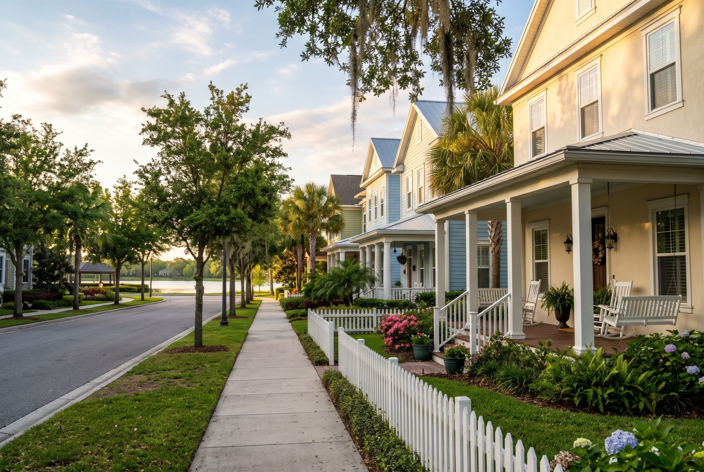

Baldwin Park
A former Navy training center turned one of Orlando's most walkable neighborhoods: front porches, a lake with a trail around it, and a village center you can walk to.

Orientation
Short answer. Baldwin Park started as a Navy training center and is now one of Orlando's most walkable neighborhoods, with Lake Baldwin and the Village Center. The association fees are worth checking before you buy or sell.
Baldwin Park sits inside the City of Orlando, just northeast of downtown and next to Winter Park. It was built on the former Naval Training Center after the base closed in the 1990s.
Video
A short look at Baldwin Park: how it started, the homes, Lake Baldwin and the Village Center, and the fees to ask about.
Prefer YouTube? Watch it there.
From base to neighborhood
The City of Orlando worked with a developer to turn about 1,100 acres into a mixed-use neighborhood, setting aside roughly 400 acres of open space — lakes, parks and trails woven through the homes.
The homes
Single-family homes, townhomes, condominiums and apartments share the same neighborhood. Styles borrow from traditional Florida architecture: front porches, homes close to the sidewalk, and garages on rear alleys. The feel changes by street, so see a few before deciding.
Daily life
Lake Baldwin is the centerpiece, with a trail of about 2.5 miles around it. Blue Jacket Park, named for the sailors who trained here, has fields and open space for events. The Village Center along New Broad Street has restaurants, shops and services, with some homes right above them. A lot of errands can be done on foot.
Getting around
Downtown Orlando and Winter Park's Park Avenue are close. Most people still drive for bigger trips, but the sidewalks and trails make short trips easy. If you work downtown, test the commute at rush hour.
Before you buy here
Because it's a planned community, read the paperwork. Ask for the owners association fee history, what the fees cover, and whether the home carries any community development district assessments. Review the architectural rules before planning exterior changes. School zones are set by address — confirm with Orange County Public Schools. Here, the fees matter as much as the price.
Price ranges
Condos mid $400Ks to mid $600Ks. Townhomes low $500Ks to $1.1M. Single-family from the $400Ks to $1M+.
Read this carefully
Approximate ranges as of October 2026, drawn from public neighborhood guides. They vary by street and change often, so ask for current numbers on a specific home.
Market context only. Not an appraisal, and not a guarantee of price, timeline, or outcome for any specific home.
Free guides
Take the details with you.
Pick a free guide: the Orlando Relocation & Home Buying Guide, a Seller Net Sheet, or the Inherited Home Checklist. We’ll send it in one email. If you’d like to talk it through afterward, reply to it or call 321-488-5542.
Search homes
Search Baldwin Park listings on your phone.
Our free home search app runs on the same MLS listings agents work from. Filter by area, price and the basics, and save the homes worth a second look.

Considering Baldwin Park
We’ll tell you whether it fits.
Call, or send a note, and we’ll tell you whether Baldwin Park actually fits what you’re looking for — not just whether something’s available.
Direct line